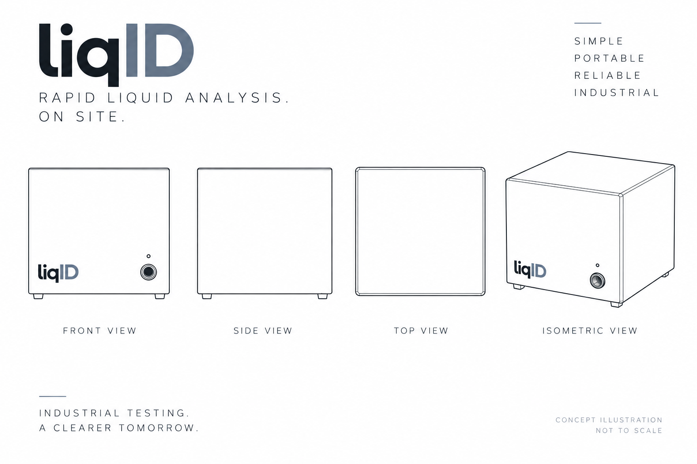

Rapid liquid analysis.
On site.
liqID is developing portable sensing technology for fast, practical analysis of industrial liquids at the point of use.
Get in touch
liqID is developing portable sensing technology for fast, practical analysis of industrial liquids at the point of use.
Get in touch
Industrial liquid testing can depend on sending samples away for analysis. liqID is developing a portable approach designed to bring useful liquid information closer to the equipment, operators and engineers who need it.
The goal is simple: provide practical information where equipment is being operated rather than relying entirely on remote testing.
liqID is being developed with industrial applications in mind, focusing on portability, rapid testing and practical deployment.
liqID is being developed as a flexible liquid-analysis platform. Current development is focused on understanding where rapid, on-site screening can provide the greatest practical value.
Potential applications include monitoring changes in hydraulic fluid condition and identifying contamination or abnormal samples before they contribute to equipment problems.
Portable screening of oils used in engines, industrial equipment and machinery could support faster maintenance decisions and condition-monitoring programmes.
Rapid field analysis may provide a practical way to identify differences in fuel samples, contamination or unexpected changes before use.
The sensing platform is also being explored for water and other industrial process liquids where fast screening could help operators identify changes without waiting for routine laboratory analysis.
liqID is currently at prototype stage and is beginning engagement with industry to understand real-world requirements and applications.
Functional sensing system developed and under active testing.
Preparing to evaluate the technology using real-world industrial samples.
Intellectual property and future product development currently in progress.
If you work with industrial liquids, machinery, fleet maintenance, condition monitoring or related technologies, we'd be interested in hearing about the challenges you encounter.